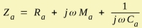
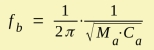
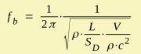
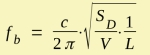
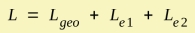
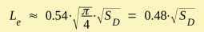
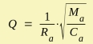
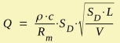
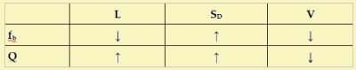

LE Helmholtz
The Helmholtz Resonator is a basic concept of an acoustic resonance phenomenon used at LE-component Enclosure Vented. For the Helmholtz Resonator we need a cavity with a volume, V and an acoustic mass, which is typically provided by an opening or an open tube. The acoustic schematic is a series connection of the acoustic mass Ma and an acoustic compliance Ca. Typically, dominant losses are due to viscosity in the duct and due to radiation. The acoustic driving point impedance is  ResonanceThe Helmholtz Resonance fb is obtained by setting Im(Za) = 0:  Using formulae for Ma and Ca as described at components Acoustic Mass and Acoustic Compliance yields:  or  with  with c speed of sound, ρ density of air and SD cross section area of vent,
V volume of cavity and L length of vent.  See also at component Duct parameter Len. Quality FactorThe Quality Factor is a measure for how well a second order circuit resonates.  Inserting formulae for Ma and Ca yields:  Here we transformed the acoustic resistance into an equivalent mechanic resistance in order to get a geometrically independent parameter for the resistance: Rm = Ra · SD Note, here we ignored the effect of the real part of the radiation impedance. Tendencies The above table shows the tendency of the Helmholtz resonance frequency fb and its quality factor Q, if we increase the values of L, SD or V. |